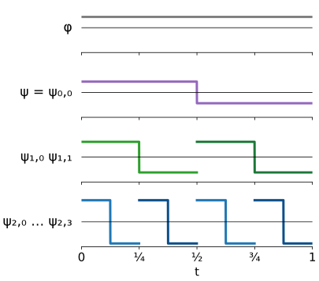
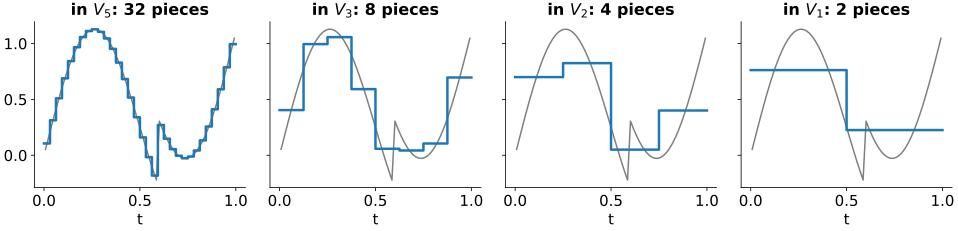
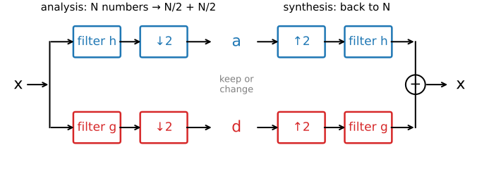
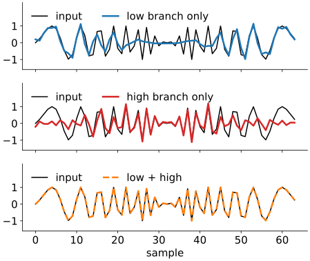
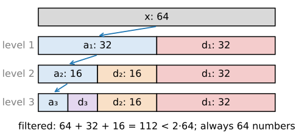
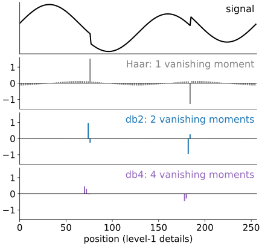
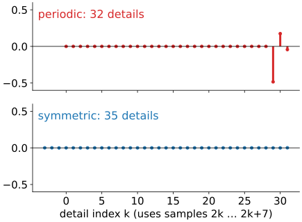

Multiresolution, filter banks and Daubechies wavelets
Image analysis
About this lecture
Last unit: the Haar transform, pairwise averages and differences, repeated. Today: what is behind it, and how to build better wavelets with the same recipe.
From vectors to functions: the scaling function\varphi and the wavelet\psi.
Multiresolution: a signal seen at resolution 1, 1/2, 1/4, …: approximation + detail at each step.
The discrete wavelet transform is a filter bank: two convolutions, keep every second sample. It costs \mathcal O(N).
Vanishing moments: why smooth signals give near-zero details, and the Daubechies wavelets that have them.
What happens at the borders of a finite signal.
Slides titled The math give the formulas and proofs; the ideas are complete without them.
The Haar patterns of the last unit are samples of two functions on [0, 1):
the scaling function\varphi(t) = 1 on [0, 1): a box, “the average”;
the wavelet\psi(t) = +1 on [0, \tfrac12), -1 on [\tfrac12, 1): “the difference”.
All other patterns are \psisqueezed by 2^j and shifted by k: \psi_{j,k}(t) = 2^{j/2}\,\psi(2^j t - k).
j = scale (larger j: shorter, finer), k = position. The factor 2^{j/2} gives every pattern the same energy. Any two of them are orthogonal: either they do not overlap, or the shorter one sits where the longer one is constant.

The math: orthonormality in L^2
Inner product of functions (the integral version of the dot product): \langle f, g\rangle = \int f(t)\,g(t)\,dt, norm \|f\|^2 = \langle f, f\rangle.
\|\psi_{j,k}\|^2 = \int 2^j\,\psi(2^j t - k)^2\,dt = \int \psi(u)^2\,du = 1 (substitute u = 2^j t - k).
\langle\psi_{1,0}, \psi_{1,1}\rangle = 0: supports [0, \tfrac12) and [\tfrac12, 1) do not overlap.
\langle\psi_{0,0}, \psi_{1,0}\rangle = \int_0^{1/2} 1 \cdot \sqrt2\,\psi(2t)\,dt = \sqrt2 \cdot 0 = 0: \psi_{0,0} is constant on the support of \psi_{1,0}, which has mean 0.
Together with \varphi(\cdot - k) for k \in \mathbb Z, the \psi_{j,k} for j \ge 0 form an orthonormal basis of L^2(\mathbb R) (Haar, 1910).
Multiresolution

V_j = all signals that are constant on pieces of length 2^{-j}. The best approximation in V_j takes the average over each piece.
Nested: V_0 \subset V_1 \subset V_2 \subset \dots: a coarse staircase is also a fine one.
Going one level coarser loses exactly the detailW_j: \;V_{j+1} = V_j \oplus W_j (approximation + detail, perpendicular).
The Haar transform peels off one W_j after another until only the coarsest average is left. This is a multiresolution analysis (Mallat, 1989).
The math: the two-scale relation
Because V_0 \subset V_1, the box \varphi is a combination of half-width boxes, and so is \psi \in W_0 \subset V_1: \varphi(t) = \sqrt2\sum_n h_n\,\varphi(2t - n), \qquad \psi(t) = \sqrt2\sum_n g_n\,\varphi(2t - n).
Haar: \varphi(t) = \varphi(2t) + \varphi(2t - 1), so h = (1, 1)/\sqrt2; \psi(t) = \varphi(2t) - \varphi(2t-1), so g = (1, -1)/\sqrt2.
If a signal is f = \sum_k a^{(j+1)}_k\,\varphi_{j+1,k}, projecting onto \varphi_{j,k} and \psi_{j,k} gives a^{(j)}_k = \sum_n h_n\,a^{(j+1)}_{2k+n}, \qquad d^{(j)}_k = \sum_n g_n\,a^{(j+1)}_{2k+n}.
The numbers h_n, g_n are all we ever compute with. Any other wavelet is just another pair (h, g); \varphi and \psi follow from them.
The DWT is a filter bank

Analysis: filter the signal with a low-passh and a high-passg (two convolutions, as in Filtering & convolution), then keep every second sample. N numbers become N/2 approximations a and N/2 details d.
Synthesis: insert zeros between the samples (↑2), filter again, add: the original signal comes back exactly.
Haar, h = (1, 1)/\sqrt2, g = (1, -1)/\sqrt2: the filters give (x_n \pm x_{n+1})/\sqrt2, and keeping every second one gives unit 1’s pairs. The high-pass g is a scaled finite difference, the derivative kernel of the kernels unit.
Try it: the filter bank
Why keeping every second sample is allowed
Throwing away every second sample normally causes aliasing (Images in frequency space): frequencies above the new Nyquist limit fold back and pose as slow ones.
Each branch alone is aliased: the low-pass half is not ideal, so some high frequencies leak through and fold down.
But the high-pass branch carries the same folded-down part with the opposite sign. On synthesis the two cancel.
This works only for matched pairs: the high-pass is the low-pass, reversed, with every second sign flipped (a quadrature mirror pair). Drop one branch, or use the wrong synthesis filters, and the folded copies remain (try it in the demo).

The math: perfect reconstruction
Orthogonal filter bank with low-pass h_0, \dots, h_{L-1} (L even):
Quadrature mirror high-pass: g_n = (-1)^n h_{L-1-n}. Haar: g = (h_1, -h_0); db2: g = (h_3, -h_2, h_1, -h_0).
Orthogonality to even shifts: \sum_n h_n h_{n+2m} = \delta_m (so \sum h_n^2 = 1), and \sum_n h_n = \sqrt2 (the average is kept).
Then the analysis matrix A that stacks the rows “h at positions 2k” and “g at positions 2k” is orthogonal (with periodic wrap-around), and synthesis is A^\top: \;A^\top A = I, perfect reconstruction, \sum a^2 + \sum d^2 = \sum x^2.
The aliasing cancellation is this identity seen in the frequency domain; we do not need the derivation (Strang & Nguyen 1996, ch. 4).
The cascade: \mathcal O(N)
Repeat the filter bank on the low-pass branch only: a_1 \to (a_2, d_2) \to (a_3, d_3) \to \dots
Work: N + N/2 + N/4 + \dots < 2N samples filtered, each with L multiplications: \mathcal O(LN), less than an FFT (\mathcal O(N\log N)).
Coefficients: N/2 + N/4 + \dots + the last approximation = N exactly (periodic borders).

Compare the Gaussian pyramid (scale space and pyramids: blur, keep every second pixel, repeat) and the Laplacian pyramid (Burt & Adelson 1983: store the difference between each level and the upsampled next one). Same coarse-to-fine idea, but the Laplacian pyramid stores more numbers than pixels and is not an orthogonal basis; the DWT stores exactly N.
Vanishing moments
A detail coefficient measures what is left after the low-pass has taken the “smooth part”. When is it zero?
Haar: when the signal is constant over the filter. A ramp leaves a detail everywhere (unit 1, B6).
A wavelet with pvanishing moments gives zero details for any polynomial of degree < p: constants and ramps (p = 2), parabolas (p = 3), …
A smooth signal looks like a polynomial over a short filter (Taylor), so its details are tiny. Only edges and other non-smooth places leave large details: sparse coefficients for piecewise-smooth signals.

The math: vanishing moments
\psi has p vanishing moments if \int t^m\psi(t)\,dt = 0 for m = 0, \dots, p-1; for the filter: \sum_n n^m g_n = 0 for m < p.
Detail of a polynomial x_n = \sum_{q < p}\beta_q n^q: \;d_k = \sum_n g_n x_{2k+n} = \sum_q \beta_q \sum_n g_n (2k+n)^q. Expanding (2k+n)^q binomially gives only sums \sum_n n^m g_n with m \le q < p: all zero.
Smooth x: Taylor around 2k with remainder of order p: d_k = \mathcal O\big(\max|x^{(p)}|\big) over the filter’s support, small where x is smooth.
dbp: the shortest orthogonal filters with p vanishing moments, 2p taps (Daubechies 1988). db1 = Haar.
More moments: smoother, sparser on smooth parts.
But longer: each edge touches more coefficients.
Symlets (sym4): nearly symmetric variants.
Orthogonal and symmetric is impossible except Haar; JPEG 2000 uses biorthogonal wavelets (CDF 9/7, LeGall 5/3; JPEG 2000 on the compression day).
Try it: smoother wavelets, sparser coefficients
Borders
A finite signal ends; a filter of length L near the end needs samples that do not exist. The same choices as for any convolution (Filtering & convolution, border rules):
Periodic (wrap): simple, exactly orthogonal, N coefficients. But the jump from the last sample to the first is a false edge and gives large details at the end.
Symmetric (mirror): no jump, so far fewer border artefacts; the usual choice for images. Keeps a few extra coefficients, (N + L - 2)/2 per branch.
Zero padding: a jump to 0 at both ends, also extra coefficients.
With all coefficients kept, every rule reconstructs exactly; they differ in how sparse the border is.

Summary
The Haar transform is a multiresolution analysis: V_{j+1} = V_j \oplus W_j, approximation + detail at each scale, with \varphi and \psi defined by two filters h, g.
DWT = filter bank: low-pass and high-pass, keep every second sample; synthesis upsamples, filters and adds. Aliasing of the two branches cancels; reconstruction is exact.
The cascade on the low-pass branch costs \mathcal O(N) and gives exactly N coefficients.
Vanishing moments: polynomials of degree < p give zero details, smooth signals tiny ones. Daubechies dbp: shortest such filters; smoother but longer as p grows.
Borders: periodic, symmetric or zero extension; periodic adds a false edge.